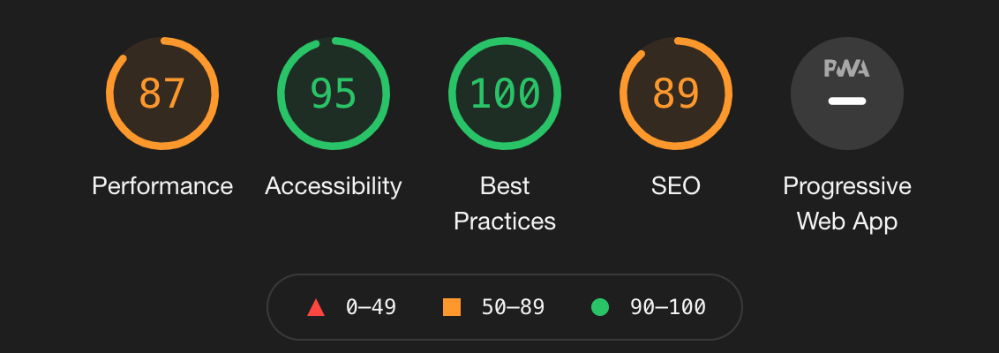

I’ve known El and Steve for a long time. I’ve practiced at Dockside Studios for 20yrs and have known El longer than that as she used to drive my band around when we were gigging in Bristol and non of us could drive (yup, playing drums for 30 years, driving for 6 - you do the math)
Over lockdown El and Steve had an email from their website provider saying that the product they were using (Mr. Site Builder) was being retired and that they would be charged a fee to be moved onto a new platform.
The amount that they were being charged wasn’t, in my opinion, astronomical or unreasonable but it was a large amount when your business is shut and can’t make any money. I’d also offered to look at the site for them as a project earlier in the year as it was non-mobile and looked pretty dated.
The deadlines were pretty tight and I needed to move the site from the existing hosting to a new one in under 2 weeks.
I needed to build a site, move the content and get it live in about 8 days. I’d been using Jekyll (which is a static site generator) for a while and knew that I could use that to build a very fast, mobile responsive site.
I didn’t want to spend ages using a really complex CMS or have sub-standard performance from an unoptimised site. Jekyll meant that I could have the footer and nav as separate files and not need to update every page manually when I needed to update them.
Building it like this has meant there are compromises. El and Steve can’t update it themselves (yet!) as I hacked it together in about 10 hours. I’m going to build contentful into the mix so that there are content sections they can edit. In the meantime the amends are pretty minimal so this isn’t a problem.

The site has been live for a couple of months and the lighthouse scores are great - speed index of 1.6s and everything under 3 seconds is pretty good. The migration worked and all new pages are now indexed